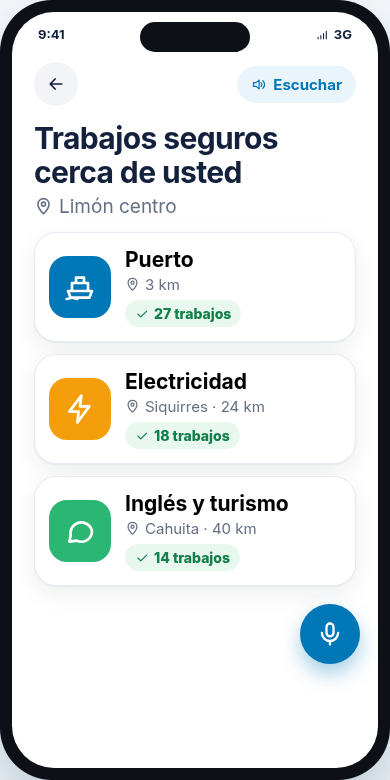
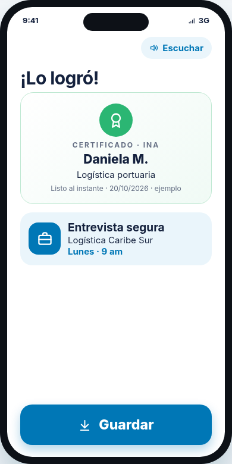
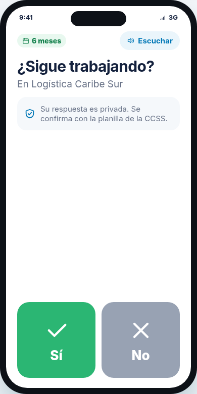
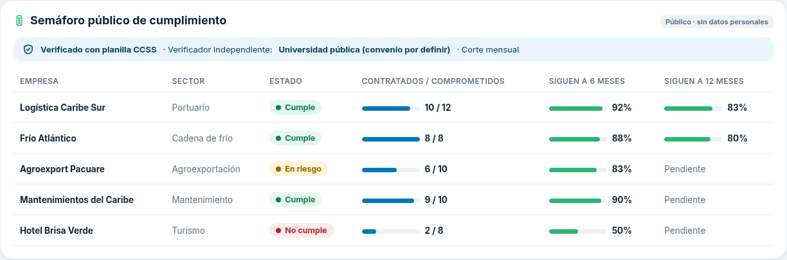
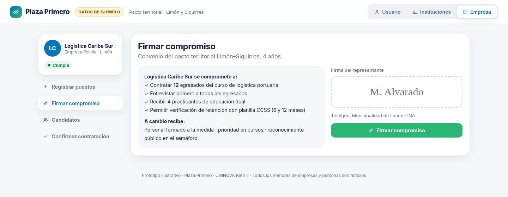

Plaza Primero · Pacto territorial verificable
DATOS DE EJEMPLO
1
Primero existe el trabajo
→
2
Después se abre el curso
→
3
Se mide si la persona sigue empleada
Usuario
Palabras cortas, voz y botones grandes



Instituciones
Semáforo público verificado con planilla CCSS

Empresa
Firma cuántas personas va a contratar

142
trabajos firmados antes de abrir cursos
7
cursos abiertos, solo con trabajo
81%
de egresados contratados
78%
siguen a 12 meses (planilla CCSS)